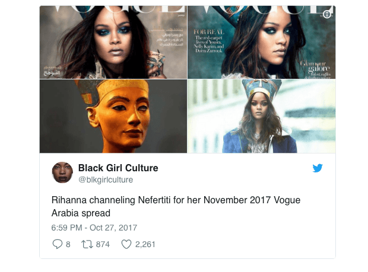

A coloured South African, and student of the ancient near east.


Academic research on ancient Egypt is dependent on public interest. We call the Western public’s fascination with our subject “Egyptomania.” So in order to generate funds, researchers must be reactive to popular trends.
This means that every year, you will be informed of some monumental news from Egypt in order to maintain top-of-mind awareness. The problem with this scheme is that when there’s no new knowledge, Egyptologists will revise old topics and themes, repackaging them to suit contemporary trends like feminism, Afrocentrism or climate change.
So instead of getting conclusive answers to legitimate questions on the evolution of our God conception, the origins of writing, or the creators of civilization, you will be continuously subjected to archaeological discoveries related to female pharaohs, black African civilizations, and apocalyptic climate change. It’s an exercise in the revision of knowledge to ensure perpetual funding.
Tutankhamun has monopolized western Egyptomaniacal attention since 1922. That’s enough time to have established some certainty in his story. But it’s the current decade, and the West requires a change.
The boy king’s story has been very boring for some time. Information is ubiquitous enough for him to have achieved a garish level of familiarity.
Is this the time Nietzsche spoke of? When “all the arts and sciences will be overrun and clogged up by shocking dilettantism.”
Nefertiti, however, provides some fresh mystery and romanticism. Her origins are enigmatic. That is, we have no idea about her life until she married the John Lennon of ancient kings: Akhenaten. From that point, she became co-regent and basically behaved like a feminist: warrior queen, artistic and religious revolutionary, divine mother and, as expected, she is considered a exemplar of Western beauty. Even her name means, “the beautiful one has come.”
Briefly, the royal couple’s official story is this: Egyptian civilization was held together by the idea of original perfection. Change, therefore, was understood as a decline from an originally perfect state. This meant that common people were extremely conservative.
Akhenaten and Nefertiti basically assaulted Egyptians with change in order to retain the aura of the crown. Their virtues and special relationship to their god had little relevance or appeal to common people because dramatic change contradicted their foundational principles. Consequently, efforts were made by succeeding rulers to remove the couple from Egypt’s cultural record. And that is when these liberal antecedents became history’s eternal victims.
In Nefertiti, we have a character with a modern feel. Through her, we can refresh Egyptomania for the next century. All we need to do is create relevance, much like they did for Tut in the roaring twenties.

The best way to do this is to secure media interest by legitimizing a contemporary cause. Feminism needs to prove that women were oppressed by all men in all locations for as long as genders have existed and in the future.
So here’s some new research from the Cradle of Civilization: Nicolas Reeves is a British archaeologist who made world headlines for his agreeable narrative. There is a grey area between the reign of Akhenaten and Tutankhamun. A guy named Smenkhare took the throne and basically bowed to the pressure of the conservatives.
Smenkhare is an obscure figure, and since Nefertiti was a powerful woman, modern prejudices dictate that she must have been Smenkhare. This is despite the abhorrent nature of her initial co-regency and her later attempt to marry a foreigner.
Like the asteroid that murdered all the dinosaurs, Smenkhare (beyond the scope of this article) is a conveniently useful figure to fatten up any hypothesis. But essentially, Reeves is only speculating while pointing to another sealed room in Tut’s tomb. Like many others, it’s unlikely that the room will ever be opened. So what we have here is a recycled Howard Carter discovery for 21st century mainstream consumption.
With King Tut basically having “appropriated” all that was intended for Nefertiti: tomb, artifacts, and subsequent cultural influence (Reeves 2015:11), Tut Mania should rightfully be Nefertiti Mania, thereby ensuring that Egyptologists have another lucrative century to look forward to. All without having to actually make a new discovery or provide any conclusive knowledge.
The new narrative contains all the mystery, romance and ghost chambers that had faded from the traditional Tut story. By ingeniously weaving separate and inconclusive pieces of evidence together, this alternative history can be used as a rallying point for feminist social justice.
Although it can be convincingly challenged on iconographic, philological, and archaeological grounds, we have here a story of massive appeal. Today’s perspective on history is tied to gender politics so we can instantly gratify a popular public need while injecting cultural value back into Egyptology. With the goal accomplished, truth is not a requirement.
New archaeological research offers the same old characters in a repurposed story suitable for current trends and garnering funds. History is now Herstory, and nobody has learned anything new.
If you still use King Tut imagery when thinking of ancient Egypt, you are dated. Cutting-edge research wants you to think of a strong, powerful, beautiful feminist icon: Nefertiti.
She was a victim of fate, buried behind a wall that nobody will ever open. We know nothing conclusive about her and we never will, thereby maintaining Egypt as the leading brand in the history of world civilizations.
I acknowledge the irony of my making Egyptology relevant in the trending manosphere but, like the organized tomb robbing that began almost as soon as elites decided they were taking their wealth with them to the afterlife, there has to be a counteraction for selfish nonsense.
Read More: The Biggest Rape Hoax In History